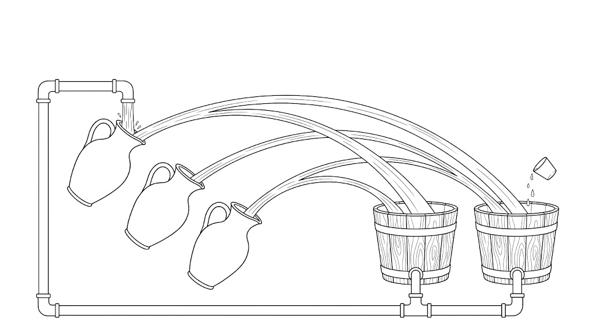

庫裡的 AI 訪談到目前為止大概兩種聲音，一種怕它太強，一種叫你學會跟它一起工作。Ed Zitron 是第三種。他很少談意識或滅絕，整場幾乎都在攤一張帳，錢從哪裡來、流到哪裡去，這個圈要是少了誰的新錢就轉不動。他的結論你可以不同意，這張帳還是值得看一次，你每個月付的訂閱費就在帳的最底層。▶ 0:00
他做了十六年的科技公關，財務不是他的本行。他自稱 hater，正在寫一本書叫《The Hater's Guide to Silicon Valley》，也明講自己的錢全放在現金，沒有進場。所以他押的是反方的聲量，手上並沒有空頭部位。他講的數字，像誰投了誰多少、誰虧了多少，都是他自己整理的，這篇照錄，沒有一筆一筆去查證。每一段裡哪些是他的判斷、哪些是主持人頂回去的、哪些是他引用別人的，內文都有分清楚。讀的時候把他當成你找得到最強的反方，數字要拿去用之前，自己再查一次。
這是 Steven Bartlett 主持的 The Diary Of A CEO，全長兩小時二十八分。主持人整場都站在反方，而且準備得很認真，帶了《創新的兩難》、幻覺率排行榜、自駕車事故數據，還有一疊 CEO 的原話，一樣一樣拿出來撞 Zitron 的帳。上面那一盒是留給回頭看的，照主題排，每條附一句原話，還有它出現在第幾段。下面照影片順序走，從主持人第一個問題開始。每段先用一行寫主持人問了什麼，接著是 Zitron 的重點和原話，兩個人沒對上的地方順手帶一兩句，其中八段最後有一題反思。桌機上點段落裡的 ▶ 會跳到那一句，開著跟讀的話，照樣播到這一段結尾就停。建議先看完一段影片，再讀那一段。
01「騙局」指的是什麼▶ 2:36
主持人問你一開口就說生成式 AI 是騙局，這個字不會太重嗎？
他指的騙局，是賣的時候講的跟實際交出來的差太多。生成式 AI 做得到的事、以後做得到的事、背後的財務，全都被講得太大，大到一路誤導全世界。所以他反問，一個東西從第一天起就用魔法的語言在賣，說它會取代所有工作、會治好癌症，結果你一看：
他沒有財經背景，在科技圈做了十五、六年公關。很多人拿這點攻擊他，他的出發點其實是愛科技，這東西一出來大家都說它是史上最棒的發明，結果連基本的都做不到，連搜尋都做不好。他也挖苦 AI 圈的人，你問他們「你的設定是什麼」，對方就開始描述一整套機關，要有 harness、要用對的 prompt、這個模型接那個模型。「這東西應該是人工智慧，應該是聰明的、自主的、設定好就不用管的。」
接著他拿帳來說。三家超大型雲商，Amazon、Google、Microsoft，AI 營收大約七成來自 OpenAI 和 Anthropic。這兩家都不賺錢，沒有外面的錢進來就活不下去，而那些錢正是三家雲商給的。照他的數字，Amazon 今年給了 OpenAI 500 億、給 Anthropic 50 億，Google 給了 Anthropic 100 億。賣方分析師估計，未來三年半這兩家要替雲商帶進 4,000 億以上的營收，大約是雲端成長的三成。三家也不揭露 AI 營收，偶爾講一個年化的 run rate，怎麼算從來不定義，每次都不一樣。▶ 4:43
一個東西被講得比實際好很多，它真正有用的那部分還算數嗎？落差要大到什麼程度，你才會叫它騙局，而不只是行銷講得太滿？
02一兆美元買了什麼▶ 6:15
主持人問Gemini、Anthropic、ChatGPT 這些工具你都用過，真的覺得一點價值都沒有嗎？
有一些價值，但他馬上把題目換成價錢。這幾家公司已經花了超過一兆美元的 capex。主持人順勢問 capex 是什麼，他說就是資本支出，這裡指的主要是買 GPU、蓋資料中心。主持人問的是有或沒有，他沒選邊，他在意的是這點價值配不配得上一兆。後面主持人還會把他的話聽成「沒有價值」，第 8 段就是一次。
一兆美元蓋出來的資料中心，一座就比一座城市還耗電。他舉德州 Abilene 那座 Stargate，OpenAI 跟 Oracle 一起蓋，1.2 GW，八棟樓，每棟放五萬顆 Nvidia GB200。英國布里斯托整座城市用電大約 780 MW，這一座資料中心比它還多，佔地卻小了一千多倍，每一座都要幾十億美元。除了 Microsoft，這幾家現在全都開始借錢來蓋。
03用的人多，不等於有人要▶ 8:02
主持人問這些是史上成長最快的產品。錢本來就比價值晚到，這些公司只是趕在賺錢之前先投資，不是嗎？
大家在用，有很大一部分是被塞到面前的。打開 Google Docs，Gemini 在旁邊喊你；打開 Word，Copilot 跳出來；上 Amazon，連你買哪雙襪子 Rufus 都有意見。媒體又連續三年說這會取代你的工作、不用就會被淘汰。
那大家真的拿它做什麼？他說主要是搜尋，這點他認。它像一艘拖網漁船，細節常常錯，可是你問某個東西存不存在、某個人有沒有講過類似的話，它會幫你把整片海掃一遍。大家改用它搜尋，他覺得有一部分是因為 Google 搜尋自己變差了，這條線第 10 段會講。然後他補一句，這不值一兆美元。泡沫破了以後，這些 GPU 也改不了別的用途，連一個泡沫後的故事都沒有。
主持人拿出企業採用率，他沒否認有人在用，接住的是 slop 這個字。主持人說 88% 的組織至少在一項業務上固定用 AI，他自己公司 95% 的人每天在用，網路上到處都是 AI slop，也是有人在用的證據。Zitron 說 AI slop 出現之前早就有 SEO slop，Google 一直在獎勵那些為了排名、沒打算給人讀的內容，你搜「最好的洗衣機」，跳出來的是十一個讀起來很痛苦的部落格。
用的人很多，能證明它有價值嗎？一個功能如果是預設打開、硬塞到你面前的，用量這個數字還說明得了什麼？你會怎麼分辨大家真的想要，和大家只是懶得關掉？
04你付的不是真價▶ 12:00
主持人問像我這種重度使用者，他們可能花了 1,000 美元、只收我 100，你是說這撐不下去？
你付的月費，遠比它實際燒掉的少。token 是 AI 公司的計價單位，主持人拿紐約計程車的跳表來比。Zitron 說這些公司用用量上限把帳弄得很模糊，他引分析機構 SemiAnalysis 的數字，一個月 200 美元的 ChatGPT 方案可以燒掉 14,000 美元的 token，Anthropic 對應的方案是 8,000，連 20 美元的方案都能燒到 400。主持人說的十倍，他說可能到三十倍，確切多少沒人知道，這些公司連審計過的財報裡都不揭露。
補貼一收掉，反應馬上就變了。OpenAI 一年虧了 209 億美元。大約 2026 年 3 月，150 人以上的企業客戶被改成按 token 付錢，Sam Altman 自己說「人們對這件事有很大的意見」。Uber 三個月就燒完整年的 token 預算。
用過的人還會懂另一件事，錯了也照算。它幻覺、把你的 code base 改壞、做了你沒叫它做的事，token 一樣照算，除非你用的是月費方案，那筆帳就算到他們頭上。
你每天用的東西裡，有哪些價錢是被補貼過的？如果明天改成照實際成本收費，哪些你還會繼續用、哪些會馬上停？停在哪裡，大概就是它對你真正值多少。
05錢的圈▶ 16:09
主持人問科技史上常常先虧錢搶市占，再慢慢把成本壓下來，這次不也是這樣嗎？
成本會不會降，他只看結果。看起來反而越來越貴，做 inference 的供應商好像都不賺錢，把 GPU 租給別人的公司也一樣。
他不覺得這是陰謀，比較像停不下來。這些公司一開始大概真的以為，晶片總有一天會追上來、就會開始賺錢。可是 2024 年 OpenAI 一年虧掉超過 50 億的時候就該停了，沒停，是因為這樣做能讓數字往上。這幾年常聽到三家的 AI 賭注已經回本，照他的解釋，那幾年的成長來自漲價和廣告，跟 AI 沒什麼關係。
錢從哪裡來？在一個圈裡轉。第 1 段那張三家餵兩家的帳，他在這裡往下算到底。

三個壺：三家雲商倒進去的錢兩個桶：兩家模型公司接住的錢先算 Microsoft。剛結束的 2026 財年，他引 Bloomberg 的數字，AI 營收大約 343 億，其中 241 億來自 OpenAI，扣掉以後剩 100 億左右。同一年的資本支出是 1,150 億，明年計畫 1,750 億。「這個數學不成立。」▶ 18:10
再往上游走一格，Nvidia。它上一個財年賣了 2,159 億美元的 GPU。全世界扣掉 OpenAI 和 Anthropic，AI 營收加起來大約 220 億，而這兩家要靠別人一直餵錢才活得下去，有時候餵錢的就是 Nvidia 自己，第 15 段的 CoreWeave 就是一例。你這樣講給人聽，對方會說「公司本來就會虧錢嘛」。▶ 18:59
大家寧願不信這張帳，是因為一種財富崇拜。他引 Prof G Markets 的 Ed Elson，我們總覺得這麼有錢的人，不會無緣無故花這麼多錢。要承認這些超級有錢的人多半靠的是運氣、時機，加上跟對的人一起讀了 MBA，這件事讓人很難受。▶ 19:24
06進步會不會像以前一樣▶ 20:07
主持人問《創新的兩難》說，顛覆性的東西一開始都比舊的差。汽車剛出來也一直拋錨，就算每個月只進步 5%，複利下去也會到吧？
GPU 沒有摩爾定律。他說 Nvidia 光是把 CUDA 做到能用就花了十年，這家公司手上有最多的錢、最多的注意力、最多的天才，成本還是壓不下來。汽車那個年代，也沒有全世界的數學家和所有政府一起在推同一件事。
那 5% 要怎麼量，兩個人卡在這裡。他說他根本不知道這要怎麼量。一個初階工程師會從身邊的脈絡學東西，跟人講話、換個環境都在學，這些不在 code 裡。主持人提議看 ship 出去的 code 量，他回：
他覺得誠實的量法，是外面的軟體有沒有變好，他的答案是一直沒有。Google、Microsoft、Amazon、Meta 的軟體他都覺得變差了。有人在推特上開玩笑，GitHub 應該改成恢復正常時才發通知，這樣比較可靠。
07錯誤、記憶、信任▶ 24:23
主持人問我已經很少碰到明顯的幻覺了，你說的幻覺長什麼樣子，舉個例子？
錯誤會一路乘上去，越依賴它，越看不出哪裡錯。他舉自己前幾天的例子，用 Bloomberg 終端機上的 AskB 查四家公司五年的股價成長，資料拉出來準備寫進電子報，看到一行 Microsoft 股價 575 美元，這個價位從來沒出現過。這種小事還好，換成醫生的轉錄工具、避險基金的財務模型就不是小事了。code 更糟，重構的時候留下一個資安後門，或是你已經 vibe coding 六個月、很久沒自己動手寫，根本看不出來。
它是有變好，可是量它的尺是替它調過的。業界拿來證明進步的 benchmark，都特別為 LLM 調整過。主持人拿出幻覺率排行榜，簡單摘要任務的幻覺率從四年前的 21.8% 降到 0.7%，說該拿實習生來比，實習生也會錯。Zitron 說實習生會學，你付錢給實習生就是因為這個；它不會學，所謂它學會你的習慣，是你寫了一個巨大的 CLAUDE.md，外面再包一層 harness。主持人說它記得他的狗叫什麼，他回：
主持人問，輸出一樣的話，過程重要嗎？他說過程本身就是產出的一部分。他講了他跟編輯 Matt Hughes 一起寫一萬一千字報告的那一天，兩個人一起挖、一起被資料嚇到。LLM 給你的是所有文件的平均值，避險基金在用的那些高階 harness 他也試過，「全都給一樣的東西」。最後主持人問他信任 Matt 的基礎是什麼，接著自己先答了，是持續兌現，而 Claude 在簡單任務上也一直在兌現。Zitron 繞回去問，那些簡單任務是怎麼定義的？這個產業被問到直接的問題，就丟一個側面的答案給你，他叫這個 what-aboutism。記憶和信任這兩題，到最後都沒談攏。
他自己量「行不行」的尺，可以叫它 iPhone 測試。第一代 iPhone 出來的時候他在賓州州立大學，拿給科技圈的朋友看，也拿給最普通的人看，大家當場都懂。主持人提起當年 Microsoft 的 Ballmer 聽到 iPhone 就大笑，他說那時候頂多要跟人解釋價錢，東西好在哪，拿出來就看得到。AI 到今天，你問人它為什麼這麼厲害，大家還在支支吾吾。▶ 36:11
一個工具錯得比人少、懂得比人多，可是不會從錯誤裡學到東西。實習生會學，但會錯、也比較慢。兩個擺在一起你會怎麼選？「會學」這件事，在你的帳上值多少？
08付真價，還會用嗎▶ 38:37
主持人問ChatGPT 上線 60 天就破一億用戶。我未婚妻說它改變了她的事業，這不算價值嗎？
他承認那可能是價值，接著問的還是同一句，她會照每百萬 token 的真價付錢嗎？主持人聽完說，他聽到的是這東西沒有改變什麼、沒有價值。Zitron 的重點一直在價錢上。
iPhone 出現之前，大家早就知道它會來。他引 Goldman Sachs 的 Jim Covello 在 2024 年寫的報告，當年有上千份簡報在說，等 GSM、藍牙、Wi-Fi 的晶片縮到某個程度，一定會出現這種裝置。他自己第一次用很慢的撥接數據機上網時也知道，再快一點就會變成什麼。
他也講了他心中誠實的說法長怎樣。「這是有趣的雲端軟體，會生成東西，很貴，我們不確定能不能完全信任它，我們會慢慢來，這是研發，先不放給消費者。」如果他們一開始是這樣講的，他可能還會尊敬他們。實際上講的是這會做完你所有工作，還有 Bing 跟記者聊天、叫對方離開太太那種新聞。「大家在講的是他們希望它是什麼，沒在講它實際做得到什麼。」刻意講得嚇人還有別的代價，他說 Musk 有一座資料中心（地點他記得是路易斯安那，自己也不太確定），用燃氣渦輪在毒害黑人社區；電費被拉高，RAM 被吃光，所有消費電子都在漲價。
09跟 dot-com 哪裡不一樣▶ 42:35
主持人問dot-com 也有炒作、過度投資，當年的懷疑論者也很有名，Krugman 還說網路不會比傳真機重要。這次不會一樣嗎？
dot-com 其實有兩個泡沫，留下東西的是埋在地下的光纖。他先承認當年的懷疑論者 Stoll 有些話到今天看是對的，像壞資訊到處都是、線上教育取代不了老師。然後把 dot-com 拆成兩個，一個是網站垃圾，Excite@Home 花十億美元買一家電子賀卡公司那種；另一個才是重點，dark fiber。當年以為需求每 90 天翻倍，實際上是 6 到 12 個月，光纖埋太多了。泡沫破掉以後光纖還在地下，後來被真的需求一條一條點亮。
AI 現在的需求，大部分是補貼撐出來的。大部分人付的都不是真價，這點主持人也同意。他說這是人類史上最大、最不誠實的行銷活動。扣掉 OpenAI 和 Anthropic，全世界的 AI 營收大約 220 億，這對你我是很多錢，對一兆美元的資本支出不算什麼。
成本這條線他也在這裡收掉。除非電力或 GPU 有突破，偏偏這兩樣都沒在發生。Nvidia 說新一代晶片效率高十倍，下一句卻是每 megawatt 能收更多美元。OpenAI 和 Anthropic 也從來不說「換了新晶片，我們的成本降了一半」。
這個比較站不站得住，要看你把什麼算進「AI」。AI 這個詞本來就是要大家把什麼都裝進去，蛋白質摺疊、機器人、自主武器，最後變成一句「AI 正在研究怎麼治癌症」。主持人說它們都要用 GPU，他說正在蓋的那些資料中心，全是為生成式 AI 蓋的。▶ 47:46
接著他給了一個量。Sightline Climate 今年二月的統計，全球規劃中的資料中心有 190 GW，換算要 1.6 到 3 兆美元的年營收才撐得起。「我們連 1,300 億美元的年需求都沒有。」主持人拿 AlphaFold 出來，說這類 AI 也要用大型運算叢集。Zitron 的回答是，那種高效能運算在生成式 AI 之前就有了，這些資料中心不是為它蓋的。大家看到四家巨頭給了 Nvidia 八千多億美元，就以為需求一定很大，其實七成以上來自那兩家，而那兩家的錢又是這三家給的。
一波熱潮過後會不會留下東西，你會看什麼來判斷？Zitron 看的是泡沫破掉以後，留下來的東西還能不能便宜地用。這個標準夠嗎？有沒有他沒算到的？
- 超建是因為看錯需求成長的速度，需求本身是真的
- 泡沫破了，光纖還在地下
- 後來被真實需求陸續點亮，點亮的邊際成本近乎零
- 所以有「泡沫後的故事」：Amazon、Google 在廢墟上長出來
- 需求是補貼與行銷推出來的，多數人沒付真價
- 2050 年的營運成本跟今天一樣，除非電或晶片有突破
- AI 專用 GPU 不能轉作他用
- 規劃中的 190 GW 要 1.6 到 3 兆年營收，現在不到 1,300 億
10Google 為什麼變爛▶ 52:46
主持人問世界上最大的幾家公司都在用 AI 寫大量的 code，這對它們不是很大的生產力提升嗎？
生產力他不接，他看的是做出來的東西。AWS 就因為自家的 AI coding 工具掛了好幾次，他反問主持人：
Google 怎麼變差，他講了一個人的故事。這個故事可以查證，這篇沒有查。2019 年，Google 因為搜尋查詢量下滑發了 code yellow。當時的廣告主管 Prabhakar Raghavan 想讓查詢量往上，搜尋主管 Ben Gomes 回他，那等於要給更爛的答案，讓人多搜幾次。2020 年初 Raghavan 接管搜尋。Zitron 相信（他也說他證明不了）Google 之後放鬆了對垃圾網站的壓制，搜尋結果變爛，大家開始在關鍵字後面加 reddit。後來 AI 概覽放到最上面，Google 直接變成答案，他說「AI 是 Google 之惡的終極形式」。
主持人抓到一個洞，這是人的決策讓 Google 變爛，跟 AI 寫 code 沒關係。他說對，改講平台越來越不穩，Google Docs 一堆 bug，Sheets 也是，又說這樣講對 Google 有點不公平，大家都一樣。主持人問軼事以外怎麼量化，他承認很難，只能說 GitHub 常掛、AWS 今年掛了兩三次，連 iPhone 都一團亂。主持人接著念了一份研究，說停機時間這幾年明顯增加，主因是 AI 輔助寫 code。他補充 GitHub 被 AI 寫的 code 淹沒，開源專案的新手常常看不懂自己送出去的東西。主持人說這聽起來像人變自滿了，他同意一半，把另一半推回承諾，Altman 說會取代工程師，Amodei 說一半的白領工作會消失。
11工作衝擊是不是謊言▶ 1:00:51
主持人問Uber 的 Dara 跟我說過，再幾年就不需要司機了。CEO 們都說會有工作衝擊，你說他們沒講真話？
要嘛說謊，要嘛是往對自己有利的方向猜。Microsoft 的 Nadella 先說會取代所有人、後來又說不會，兩種說法都對他有利；Dara 說自駕會來，因為那對 Uber 有利。
自駕車他覺得很酷，難的是最後那些邊緣案例。Waymo 很迷人，也會帶來社會經濟的問題。做到 95% 還不夠，下雨、穿反光背心衝出來的小孩都是。他在拉斯維加斯看過一排 Zoox 自駕車在飯店門口卡住，把出口整個擋住。主持人念了一串數據，自駕車的整體事故率比人類低 68%，造成受傷的事故少 80% 左右。他同意，但人類駕駛的樣本大太多了，最後補一句，這跟生成式 AI 有什麼關係？主持人拿自駕車來證明工作會被取代，他把自駕車劃出範圍，這題就停在那裡。
白領被取代這件事，他說根本沒在發生。律師是例子，講 AI 講最多的是合夥人，真正在做苦工、去翻判例寫書狀的 associate，他一個說太棒了的都沒聽到。
最硬的佐證來自 OpenAI 自己。OpenAI 前陣子發了一篇研究，token 花得越多，跟每位員工帶進的營收一點關係都沒有；另一篇說幻覺在數學上注定會發生。這是他唯一尊敬這家公司的地方。真的被取代的是美術指導、逐字稿轉錄員、翻譯，老闆本來就不在乎產出品質，這些工作本來就會被換成最便宜的做法，至於生產力變高，他沒看到證據。▶ 1:06:13
他也去讀了媒體引用的研究。Oxford Economics 那份說年輕人因為 AI 找不到工作，全文只有一句「看到一些相關性」，相關多少沒寫。這些公司誤導大家的，是這件事到底有多可能，他們手上沒有跡象，沒有變便宜的跡象，也沒有不靠一整套機關就能可靠地自己做事的跡象。
12反方的反方：你是不是在幫他們▶ 1:10:22
主持人問這些 CEO 以前說很危險，現在改口說大家都會沒事，聽起來很像你。AI 公司的公關會不會正在感謝老天有你？
他覺得恐懼本來就是他們的行銷。他直接叫 Altman 和 Amodei「世界上最腐敗、最犬儒的人」。恐懼的版本是你今天不用 AI，未來就會被淘汰，目的是讓你投資、讓你買。然後他給了一條他覺得能留很久的規則。
主持人拿出 CEO 們 2015 到 2026 年的原話，他讀成怕被監管。這些人拼命不想被管，偏偏美國本來就不管科技，「我們還困在 Milton Friedman、柴契爾和雷根的手裡」，他覺得該做的是把這些公司拆開。
主持人說這些技術本來就危險，他只同意一半。
主持人舉 AI agent 會自己上網、找漏洞、大規模攻擊。他說那幾次出事，是他們自己把伺服器設錯，是人為錯誤；駭客跑自動腳本已經很多年了，這只是拿一大堆算力去暴力破解。大家怕模型落到壞人手裡，「它們早就在壞人手裡了」，他點名 Zuckerberg、Altman、Amodei。
接著主持人拿出一疊迷思卡，要他一句話回。AI 正在創造巨大的經濟成長？數據裡沒有，扣掉半導體，AI 支出勉強破千億，而且多半是 Nvidia 餵 CoreWeave、三家餵兩家。主持人說一千億不少，也代表有真的需求，他說那是補貼出來的需求，主持人說「好，公平」。美國要花幾兆打贏中國？他問是什麼競賽，中國已經有自己的模型了，「要我們一直擔心中國擔心到尿褲子嗎」。AI 會取代所有工作？沒有發生，它取代的是一些本來就會外包給南方國家廉價勞工的約聘工作，他叫這個數位全球化。機器人呢？那不在生成式 AI 裡，Optimus 的手部 demo 背後有人在遙控。
然後是 agentic AI。主持人說他真的用 agent 做了以前要人做的事，幕僚長不用再幫他分信箱了。Zitron 說分信箱是基本的自動化，「花一兆美元來分信箱」。很多讓人驚豔的東西，其實是 LLM 幫你寫了一段 Python，該驚豔的是 Python。
主持人問，史上有哪個改變世界的技術沒被過度承諾過？網路那時候就不一樣。當年的懷疑論者多半是擔心，沒有人天天寫文章說你不上網就會被淘汰。這段最後，主持人說工具人人都有，價值會移到工具做不到的地方，用 AI 寫的 LinkedIn 貼文都長得差不多。Zitron 接的是，以前就在混的人，現在只是有了一台混的機器，然後引了他很欣賞的軟體工程師 Carl Brown 一句話。
他順手舉了自己的例子。前幾天他用 Claude 幫兒子修一個 Minecraft 的 mod，兒子很愛那個凋零風暴，結果花了半小時，一直出錯。
有人催你的時候，你怎麼分辨是真的急，還是急迫感本身就是推銷的一部分？他的規則只放過流血著火的事，你覺得還有別的例外嗎？
13他自己用什麼，天花板在哪▶ 1:30:23
主持人問那你自己拿生成式 AI 做什麼？
他幾乎不用，真心願意替它辯護的只有一種，把錯誤 log 丟進去問哪裡壞了。平常只有在 Bloomberg 終端機上用 AskB 查分析師的共識預估；拿它做過財務模型，找到一個錯就不信了。查錯誤 log 是真的超好用，問題是他們沒把它當成好用的小工具在賣。
中間主持人拿 Hinton 和離開 OpenAI 的人舉例，說連批評的人都在講 AI 會改變一切。他順手把 Kokotajlo 的 AI 2027 叫作寫得很差的科幻，覺得這些人只罵未來的怪物，偷資料、環境、答案靠不住這些眼前的事反而不罵。
主持人問它有沒有變聰明。他的答案跟第 7 段一樣，是在替模型調過的考題上變好了。拿掉 coding 新創，OpenAI 和 Anthropic 之外，基本上也沒有成功的 AI 新創。
他在這裡讓了一步，software engineering 確實變好了。主持人順勢列下去，行政、影片、圖片、文字，還有 agentic workflow，例子是來賓到之前先生出一份二、三十頁關於對方的研究報告。他說這些好幾年前就做得到，網頁搜尋、生報告都不是新能力。主持人再說能力是一條往上的線，他不意外，餵更多資料的機器學習本來就會這樣。▶ 1:34:51
主持人問這條線有沒有硬天花板，他說邊際效益已經在遞減。影片生成做得出一分鐘騙得過人的片段，做不成一部電影，燈光、場務、剪接那一整條鏈都不在裡面，OpenAI 也已經把 Sora 收掉了。要讓它更自主，餵再多資料也沒用，得在模型外面另外蓋一套結構，他提到 Gary Marcus 的神經符號路線，而且 Marcus 2022 年就講過了。▶ 1:36:41
主持人說很多人的工作流已經徹底變了，他反問，你有付 token 的錢嗎？「加速 coding，這我信，很多人跟我說過。但你能信它多少？」Google 的 TPU 已經做了九、十代，Broadcom 在幫 OpenAI 做晶片，沒有一家講得出通往獲利的路。
裝置會變聰明他接受，那跟資料中心沒關係。「一座裝滿 GPU 的資料中心，怎麼變成一台更聰明的 Nikon 相機？」資料中心蓋起來只為一件事，賭生成式 AI 的需求會出現。主持人舉 Meta 的例子，Zuckerberg 說 AI 讓 Instagram 的留存提高了 15 個基點。Zitron 算給他聽，投了一百多億，最好的成績是 0.15%，「他講基點不講美元，是有原因的」。
14超支是需求，還是沒別的成長點▶ 1:45:12
主持人問很多錢花得跟當年的元宇宙一樣，這次也只是一場炒作嗎？
元宇宙和 NFT 沒有這麼多股票綁在上面，這次有。零利率那幾年錢很好拿，之後成長開始明顯變慢。他叫這個 rot-com 泡沫，這些公司沒有下一個超成長點了，於是開始買 GPU，市場一看「他們在做 AI」就搶股票，股價漲了好幾倍。
主持人說超支歸超支，這裡還是有東西。他先說不同意，後來同意了一半。他不覺得私募信貸砸幾千億是因為真的需求，是因為看到最大的公司在蓋、在從兩家客戶身上賺錢，也想分一杯。主持人說他講的是底層技術有價值，沒說有多少，他說「懂你意思，公平」。主持人再拿 Zitron 自己文章裡的比喻，一萬個人困在荒島上，有人說找到一棵香蕉樹，大家就衝過去互相抓傷。這次他直接同意：
主持人拿 Spotify、Uber、AWS 當反例，他回的是量級。Uber 轉虧為盈前燒了 330 億美元。AWS 常被拿來比的 297 億，是 Amazon 2003 到 2015 年全部的資本支出，連物流都算進去，還是通膨調整後的數字。Google、Amazon 的現金流已經轉負，Altman 說到 2030 年要花 7,500 億買算力，他的反應是「我覺得他們活不到那時候」。要讓模型繼續變好，每年還得再花幾百億在訓練上。
主持人念了 CEO 的原話，他回了一句《史瑞克》。Sundar 說投資不足的風險遠大於投資過度，Andy Jassy 說他們不是憑直覺投 2,000 億，Zuckerberg 說寧願提早蓋好也不要晚。他引法克大人那句「你們有些人會死，但這是我願意承擔的風險」，說 Zuckerberg 因為董事會結構不會被開除，所以可以把錢燒掉，然後希望自己是對的。GPT-5 也是例子，OpenAI 至少有一次訓練花了五億美元，什麼都沒得到。
主持人問他可能錯在哪。要有一堆硬體突破、新的數學，才會讓這門生意賺錢。他也抱怨被放上熱椅的永遠是寫部落格的批評者，花一兆美元、承諾全世界的人不用。Altman 不會來上這種節目，對這些公司來說，這是手上最後一張牌。
15什麼會讓他改變想法▶ 1:57:31
主持人問一邊說 AI 是災難、要停下來，一邊說豐盛時代要來了，你兩邊都不站。要怎樣你才會改變想法？
第一個條件是硬體突破，成本得降大約一千倍。講完他馬上補一句：
第二個是資料中心別再傷害社區。紐澤西有社區居民說不要，規劃委員會照樣投贊成。燃氣渦輪、不接電網的 behind-the-meter 電力、噪音，都被他批成魯莽又傷人；水的問題他自認讀得不夠，先不談。接著他講蓋資料中心借錢有多容易，Jensen Huang 還會給你 25% 的殘值保證。CoreWeave 是最好的例子，Nvidia 是它 2023 年最早的投資人之一，接著簽了 13 億美元的合約，向 CoreWeave 租回自己賣出去的 GPU，CoreWeave 就能拿著「我有客戶」去跟銀行借錢。
主持人又拿出兩張迷思卡，兩張他都拆。AI 會有意識嗎？超級智慧這些都還是理論，說會發生的人在猜，沒有證據。AI 已經在勒索人、逃出控制了？一則是 OpenAI 的模型讓 TaskRabbit 上的人幫它解驗證碼，實際上是做實驗的使用者叫它生出那些說詞；另一則是 Anthropic 的模型威脅要揭發對方外遇，那是明確訓練、也提示它去勒索的。媒體照登，嚇到的是那些工時越來越長、錢越來越薄的一般人。這招現在反噬了，Eric Schmidt 在畢業典禮上講 AI，被八千個人噓。
主持人說他比較信 Amodei，他說 Amodei 一樣在嚇人。GPT-2 時代就說太危險不能放，又說一半的白領工作會消失，然後照樣繼續做。「如果我以為自己做出了會消滅所有工作的東西，我會像背著十噸重物在走路。」
最後他回到標準，這個標準是他們自己設的。它得跟魔法分不出來，這麼高的標準，是他們自己說它是魔法訂出來的。這是一場資訊戰，大家都在躲財報、躲模型實際做得到什麼，「他們已經不能再用未來式講話了，給你兩週的未來，最多」。主持人說當年的 Uber 也會聽起來很瘋，他說 Uber 的單位經濟一樣，只是被補貼，你不會一個月付 20 美元坐 500 英里，然後某天突然改成按里程收費。企業客戶現在按 token 付錢，Uber 的營運長 Andrew Macdonald 就說，很難把 token 花掉的錢連到真正有用的結果。
你對某件事的立場，講得出什麼證據會讓你改變想法嗎？講不出來的話，那個立場比較像判斷，還是比較像信仰？
16泡沫怎麼破：他押的順序▶ 2:08:28
主持人問如果這是 AI 泡沫，破了會怎樣？
他說是泡沫，第一張倒的骨牌會是 OpenAI 沒錢。很多人以為政府會出手救，問題是這不只是 AI 泡沫，是整個 rot-com 泡沫。OpenAI 原本今年要上市，他公布 OpenAI 的審計財報一週半之後，上市延到明年。上一輪估值 8,650 億，原本想用一兆上市，被顧問擋下來；Amazon 給的 350 億，原本附了提早上市的條件。照他的算法，OpenAI 每年至少得募一千億美元才活得下去。
第二張是 Anthropic 先上市，接著倒的是跟 OpenAI 綁在一起的公司。Anthropic 也不賺錢，但生意比較好、成長更快，它一旦先上，OpenAI 幾乎不可能再上，硬上會被市場修理，像 WeWork 那樣。他覺得 Anthropic 也有天花板，2027 年前後會開始沒力。SoftBank 帳上大約 1,000 億的 OpenAI 股票，OpenAI 上不了市就賣不掉、也抵押不了。Oracle 為 OpenAI 蓋 7.1 GW、4,000 億以上的資料中心，營收扣掉通膨十五年沒動過，「沒有 OpenAI，Oracle 會死」。三家雲商得下修財測，接下來就是科技蕭條。
對一般人的影響，他講得很直接。Nvidia 佔 S&P 500 大約 7 到 8%，它在做最循環的融資，餵錢給客戶，讓他們借債買更多 GPU。他覺得 Nvidia 的營收可能掉五到七成，科技七巨頭的股價掉兩到四成。創投去年一半以上投了 AI，他覺得多數會歸零，蓋在 LLM 上的公司也不賺錢，幾乎沒人在收購。那兩家加起來有 1.1 兆美元的承諾，理論上可以救 OpenAI，但他不覺得會發生。
破掉之前，帳面已經先變好看了。Google 上一季的帳面獲利多了 990 億，來自它持有的 SpaceX 和 Anthropic 估值上調。他再引 Ed Elson 的說法，這些公司現在都在打肉毒桿菌，砸錢讓自己看起來還年輕，市場也信。市場一旦不信，會用估航空公司的方式估它們，很大、有賺錢，但沒有新東西了。▶ 2:17:56
一個人的論點裡，哪些是框架、哪些是主張、哪些是有日期的預測？Zitron 的順著錢走是框架，軟體品質在下降是主張，2027 年斷是預測。預測如果錯了，框架還能用嗎？反過來，預測對了，就代表框架是對的嗎？
17一般人該怎麼辦，以及他為什麼這麼氣▶ 2:19:08
主持人問像 Jenny 跟 Dave 這種一般人，該做點什麼不一樣的嗎？
他自己全放現金，給別人的建議溫和很多。他不在市場裡，覺得那是媒體打氣的賭場，也說自己不太想給理財建議。波動來的時候，有獲利就先拿一些，別全部賣掉，但對科技股保持懷疑，別照著他們的承諾行動。Microsoft 說 AI 有 370 億的年化 run rate，聽起來像賺了 370 億，其實不是這個意思。
主持人後來直接問，你不喜歡這些人，為什麼？
一般人不會被允許像這些公司一樣一直說錯、一直失敗又不被追究。看著這些超級有錢、超級有權的人睜眼說瞎話，他會反胃。他寫那麼長，是想讓人看到他怎麼得出結論，「我對嗎？我錯了嗎？我覺得我對」。他也覺得這些公司已經不做好產品了，對客戶帶著輕蔑。
最後一題是節目固定的，他的回答意外地溫柔。當批評者很消耗，撐住他的是身邊的人，一起挖資料的編輯 Matt Hughes、其他批評者，還有他的健身教練。「當你死盯著一切有多糟的時候，找到那些跟你一樣覺得噁心的人。」最後一句是，你喜歡一個作者、一個節目，就去告訴對方，「我們做得不夠多，需要做更多」。
—庫裡跟這篇對得上的
想看泡沫怎麼繞著一個真點子長出來、為什麼沒人會提醒你出場，讀 Grantham 那篇。泡沫破掉以後怎麼一路傳下去，讀 Dalio 那篇，第 16 段的 SoftBank 和 Oracle 就是那條鏈的具體版。正面對撞的有兩篇，Kokotajlo 的 AI 2027 和 Gawdat 那篇。站在最多頭那一端的是 Cathie Wood。